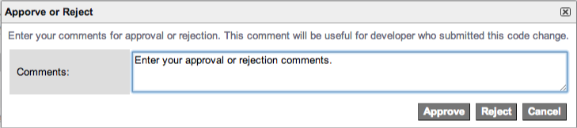
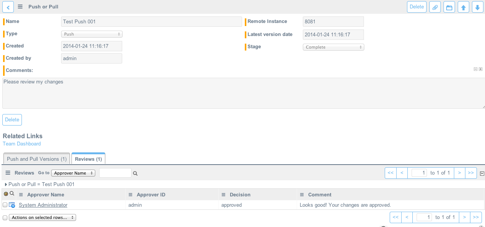

Using Team Development
Contents
1 Overview
Team development allows developers to work on separate development instances while sharing code and resolving collisions throughout the development process. Be sure to read Team Development before starting to use team development. After setting up the instance hierarchy, develop changes on your local development instance. Use the team dashboard to manage team development activities, such as:
- Tracking local changes and determining which changes to promote to the parent development instance.
- Pulling changes from the parent instance and resolving any collisions with local changes.
- Comparing your instance with other development instances and resolving any collisions with other development projects.
- Pushing changes when a feature is tested and ready to promote to the parent development instance.
Developers with admin access to their development instance and the parent instance can use team development. For alternative access settings, see Granting Access Rights to Developers.
2 Team Dashboard
The team dashboard provides a central place to manage all team development activities on your development instance. You can track local changes, pull and push changes between the local and parent instances, compare the local instance to other development instances, and resolve any collisions. You can also reconcile with the current parent instance or change the parent instance.
To access the dashboard, navigate to Team Development > Team Dashboard.
The control panel in the top left provides status indicators and team development actions.
- Parent: indicates the status of the connection to the parent instance. If a problem or warning is detected, point to the indicator to view the error messages, or click the indicator to open the remote instance record.
- Change: changes the parent instance. See Changing the Parent Instance.
- Reconcile: compares the development instance to the parent instance. See Reconciling.
- Ready to Pull: indicates the number of changes on the parent that have not been pulled to the local instance.
- Pull: initiates a pull. See Pulling Versions.
- Push: opens a page that allows you to review the changes before a push. See Pushing Versions.
- Refresh: updates the status indicators on the control panel. The dashboard updates only when you reload or refresh the page.
- Local: indicates the status of the most recent comparison with another instance. If collisions are detected, click the indicator to open the list and resolve the collisions. See Resolving Collisions.
- Collisions: appears only if any local changes collide with versions pulled from the parent and indicates the number of collisions. Click the indicator to open the list and resolve the collisions.
- Compare to: allows you to select another development instance to compare with the local instance. See Comparing to Peer Instances.
- Ready to Push: indicates the number of local changes that are queued for the next push. See Queuing and Ignoring Local Changes.
- Local changes: indicates the number of local changes that have not been queued or ignored. Click the indicator to open a list of these changes.
- Ignored: appears only if any local changes are ignored and indicates the number of ignored changes. Click the indicator to open a list of these changes.
The team dashboard includes lists for tracking local changes and viewing the history of team development activities.
- Local changes: lists the local changes that have not been queued or ignored.
- Pushes and Pulls: provides a history of pushes and pulls. Expand a row to see the customized records for which versions were transferred as part of the push or pull.
- Instance Comparisons: provides a history of comparisons with other development instances.
- Collisions: lists the collisions that must be resolved before the next pull or push. You can right-click a row and select Resolve Collision. See Resolving Collisions.
- Ready to Push: lists the local changes that have been queued for the next push.
- Ignored: lists the local changes that are ignored for all pushes.
3 Pulling Versions
Pulling retrieves versions of customized records from the parent instance and adds them on the development instance. Pulling does not retrieve any versions for changes made by system upgrades, but it retrieves all versions for changes made by users, not just the current version. Historical versions are saved with a state of History.
Pulling retrieves all versions for changes made by users that have not already be pulled onto the development instance, and you cannot choose which versions to pull. The first time you pull from a parent instance, the pull retrieves all versions for changes made by users. Subsequent pulls retrieve the new versions since your last pull. Each pull is recorded in the Push or Pull [sys_sync_history] table on the development instance.
To pull versions from the parent instance:
- Navigate to Team Development > Team Dashboard.
- In the control panel, click Pull.
- On the completion page, click Show Results. The Push or Pull form opens.
- The Push and Pull Versions related list shows the customized records for which versions were retrieved and indicates if any pull exceptions exist.
- Resolve any collisions.
3.1 Pull Exceptions
Pulling ignores versions when any of the following conditions occur:
| Issue | Description |
|---|---|
| Matched an exclusion policy | An exclusion policy prevents pulling changes for records matching the policy conditions. The pull identifies the changes but does not include versions for these records. Exclusion policies are available starting with the Eureka release. |
| Private properties | A private property is excluded from all update sets and pulls. |
| Collisions | A collision is detected when the pulled version and the current local version both include modifications to the same record. You must resolve all collisions before you can pull. |
| Previously resolved collisions | A previously resolved collision is when you resolved a collision by accepting either the pulled version or local version of a record. The pull remembers your decision and accepts the version you indicated. |
| Skipped | Pulls will skip versions where there is a problem with the version record such as a corrupt or missing version. |
4 Resolving Collisions
The team dashboard displays the number of collisions between the local and the parent instance. A collision is detected when the pulled version and the current local version are modifications of a different version, indicating that someone else has modified the same record you have modified. To ensure that your changes do not conflict with other development efforts, you should resolve collisions as soon as they are identified. You must resolve all collisions before you can pull or push.
To resolve collisions individually:
- Navigate to Team Development > Team Dashboard.
- In the control panel, click the number of collisions. A list of collisions opens.
- Right-click a row and select Resolve Collision. A comparison between the current version on the local instance and the current version pulled from the parent appears.
- Review the differences between the versions and use one of the following methods to resolve the collision:
- Click Use pulled version to load the version pulled from the parent as the current version.
- Click Use local version to maintain the local version as the current version. The pulled version is added to the version history for the record.
- Create a new local version and manually merge the changes in both the pulled and local versions. Then, repeat steps 1–4 for the same change and click Use local version.
- In the confirmation dialog box, click OK.
- Repeat steps 3–6 for every collision in the list.
To resolve multiple collisions without reviewing the differences between the local and pulled versions:
- Navigate to Team Development > Team Dashboard.
- In the control panel, click the number of collisions. A list of collisions opens.
- Select the check boxes beside the rows you want to resolve.
- In the Actions choice list, use one of the following methods to resolve the collision:
- Select Use Pulled Version to load the version pulled from the parent as the current version for all selected collisions.
- Select Use Local Version to maintain the local version as the current version for all selected collisions. The pulled versions are added to the version history for the records.
5 Local Changes
The Local Changes table tracks which customized records have current versions that exist on the development instance but not on the parent instance. Use local changes to collect changes in preparation for a push.
You queue local changes that are ready to push. Each development instance maintains a single queue, regardless of who develops or queues the changes. You ignore local changes that you do not want to push. For example, you may want to ignore changes to the color scheme that visually distinguish a development instance from the production instance. You can remove a change from the queue or stop ignoring a change.
Changing the parent instance or reconciling recreates the list of local changes that have not been queued or ignored. If you had previously queued or ignored a local change, that designation is maintained.
On the team dashboard, the Local Changes list shows the local changes that have not been queued for the next push or ignored for all pushes. The Ready to Push list shows the changes that are queued, and the Ignored list shows the changes that are ignored. Use any of these methods to navigate a list of local changes.
- To open the local change record itself, click the reference icon beside the row.
- To open the customized record, click the link in the first column.
- To view a comparison between the current local version and the version most recently pulled from or pushed to the parent, right-click the row and select Show Changes Since Last Pull. An error message appears if a previous version does not exist (for example, in the case of a newly created record). If a previous version is available, you can revert to that version from the comparison window.
- To open the application file for the customized record, right-click the row and select Show Application File.
- To open the current version record, right-click the row and select Show Version.
5.2 Queuing Local Changes for Push
To queue changes that are ready to push:
- Navigate to Team Development > Team Dashboard.
- Filter the Local Changes list to show only the changes that are ready to push.
- For example, filter the list to show only the changes associated with a particular application.
- Click Queue All For Push.
- [Recommended] Review the Ready to Push list to ensure that the correct changes are in the queue.
- To remove changes from the queue, select the check boxes beside the rows and select Do Not Push from the Actions choice list.
- To remove changes from the queue and choose to ignore them instead, select the check boxes beside the rows and select Ignore This Change from the Actions choice list.
| |
Note: For the Local Changes list, click Reset Filter to remove any filter conditions you added and see all the local changes that have not been queued or ignored. |
5.3 Ignoring Local Changes
Ignoring a local change prevents updates to a record from generating new versions in the Local Changes list. An ignored local change always points to the current version for the record. You cannot push ignored records to another instance.
| Action | Results |
|---|---|
| Ignore a record that has a version queued for push | The queued change is deleted |
| Ignore a record that has a version queued for code review | The queued change is deleted |
| Pull changes for an ignored record | Collision |
| Resolve a collision by taking the parent version | There is no longer a local change to ignore |
| Resolve a collision by keeping the local version | The ignored change remains on the local instance |
To ignore changes that you do not want to push:
- Navigate to Team Development > Team Dashboard.
- Filter the Local Changes list to show only the changes that you want to ignore.
- For example, filter the list to show all changes in the Default update set.
- Click Ignore All.
- [Recommended] Review the Ignored list to ensure that the correct changes are ignored.
- To stop ignoring changes, select the check boxes beside the rows and select Do Not Ignore from the Actions choice list.
- To stop ignoring changes and add them to the queue instead, select the check boxes beside the rows and select Queue for Push from the Actions choice list.
5.4 Backing Out Local Changes
To back out all local changes and restore the last version reconciled with the parent instance (available starting with the Eureka release):
- Define a parent instance.
- Pull changes from the parent instance.
- Navigate to Team Development > Team Dashboard.
- Filter the Local Changes list to show only the changes that you want to back out.
- Do one of the following:
- Click Back Out All.
- Right-click the local change you want to back out, and then click Back Out.
6 Pushing Versions
Pushing promotes changes from the development instance to the parent instance. It commits the current version of a customized record on the development instance as the current version on the parent instance. Pushing adds only the current development version to the parent, not all the development versions.
Pushing creates a local update set on the parent that is marked as complete. Pushed changes are also tracked as local changes on the parent. Therefore, you can promote changes through your development and test hierarchy by transferring the update set or by pushing the local changes. Each push is recorded in the Push or Pull table on the development instance.
| |
Note: Updates to records from different applications cannot be pushed/pulled in the same push/pull. To resolve the error in the case that updates to other applications are mixed in:
|
To push versions to the parent instance:
- Navigate to Team Development > Team Dashboard.
- Queue the local changes that are ready to push.
- Pull versions from the parent instance and resolve any collisions.
- You cannot push changes to the parent instance if collisions are detected.
- In the control panel, click Push. The Push Changes page opens.
- Provide a Name for the changes.
- Review the list of changes to ensure that the correct changes are included.
- To remove changes that you do not want to push, select the check boxes beside the rows and select Do Not Push from the Actions choice list.
- To add changes, click Cancel and repeat the procedure from step 2.
- [Optional] Edit the name. The name identifies the push record on the development instance and the local update set record on the parent instance.
- [Optional] Enter comments. The comments are added to the push record on the development instance and the local update set record on the parent instance.
- Click Push Changes. The system initiates a pull to ensure that there are no collisions before the push proceeds.
- If collisions are detected, the push is automatically canceled and you must repeat the procedure from step 3.
- If no collisions are detected, the changes are staged on the parent instance. On the parent, each version is validated and then committed in the correct order to maintain dependencies between records. For example, a new table is committed before a field on that table to ensure the field is properly created.
- Note: You cannot push if there is a version conflict between instances or the pushing instance has changes in the Awaiting Code Review stage.
- On the completion page, click Show Results.
- Review the push record for any errors or skipped changes.
- Changes with a state of Pushed were committed on the parent instance.
- Changes with a state of Skipped were not committed on the parent instance and remain queued as local changes on the development instance.
- For each skipped change, review the log message to determine why the change was skipped. Develop any changes that are necessary to commit the desired version on the parent instance, and then push them. Some examples of why a change may be skipped include:
- A table does not exist on the parent because it was created when you activated a plugin on the development instance. Ensure the plugin is activated on the parent and push the change again.
- An error occurred during the push. Try to push again.
- The current version is invalid. Revert to a previous version and make the change again to ensure the version is valid.
- An error occurred on the parent during the push. The Log field on the push record contains the exception message. Review the system logs on the parent instance and troubleshoot any problems with the instance.
6.1 Approving or Rejecting Pushes
Code reviewers must approve or reject a push from the team development application. Although reviewers can see the individual versions within a push, they must approve or reject the push as a whole (available starting with the Eureka release).
- Log in to the parent instance that requires code review.
- Navigate to Team Development > Code Review Requests.
- Select a change in the Awaiting Code Review stage.
- Review the changes in the Push or Pull Versions related list.
- Click Approve or Reject.
- [Optional] Enter review comments in Comments. These comments are visible to anyone who can see the Pushes and Pulls history.
- Click either Approve or Reject, as appropriate.
- Approve or reject changes
| |
Note: The URL and Remote Instance fields list the address and name of the instance where the change originated. |
6.2 Backing Out a Push
To back out a push (available starting with the Fuji release):
- Navigate to Team Development > Pushes and Pulls.
- Select the push to back out.
- Click Back Out.
- Click OK when the confirmation message appears.
6.3 Comparing Pushed Versions to Local Versions
Code reviewers can compare the pushed versions to the local versions to see the potential effect of incoming changes.
- Log in to the instance requiring code review.
- Navigate to Team Development > Code Review Requests.
- Select a change in the Awaiting Code Review stage.
- Review the changes in the Push or Pull Versions related list.
- Right-click a row in the list and click Compare to Current. A comparison of the differences between the pushed and local versions appears.
6.4 Checking the Review Status of Pushed Changes
If the parent instance requires pushed changes to undergo code review, changes are placed in the Awaiting Code Review stage. If you configure the parent instance to send notifications, it sends the submitting developer a notification when the pushed changes are approved or rejected. Developers can also manually check the status of their pushed changes from the Pushes and Pulls module on the submitting instance.
- Log in to the instance that submitted code for review.
- Navigate to Team Development > Pushes and Pulls.
- Filter for the push you want to review.
- Pushes in the Complete stage have been approved and applied to the parent instance.
- Pushes in the Collided stage have been rejected because of a collision.
- Pushes in the Awaiting Code Review stage are awaiting review (available starting with the Eureka release).
- Pushes in the Code Changes Rejected stage have been rejected by a reviewer (available starting with the Eureka release).
- Pushes in the Code Review Request Cancelled stage have been cancelled by the submitting developer (available starting with the Eureka release).
- Click the Reviews related list to see the following information.
- Who submitted a review decision.
- What the decision was: either approved or rejected
- What comments if any the reviewer provided.
- Viewing the status of a code review request
6.5 Canceling a Code Review Request
Developers can cancel any push they submitted that is in the Awaiting Code Review stage. Canceling a request sets the push to the Code Review Request Cancelled stage on the submitting instance. The submitting instance retains a version history of the push but the parent instance does not. Developers can cancel code review requests starting with the Eureka release.
- Log in to the instance that pushed the changes.
- Navigate to Team Development > Pushes and Pulls.
- Filter for the push you want to cancel.
- Note: You cannot cancel a push that has been approved or rejected.
- Select the Push or Pull record.
- Click Cancel Code Review.
7 Comparing to Peer Instances
You can compare the local instance to any other remote instance and commit any current versions from the remote instance on your development instance. Comparing allows you to share code between instances without pushing to a common parent.
Comparing instances does not automatically commit any versions on the local instance. It initiates a full comparison of all changes on the remote instance and all changes on the local instance, and then reports which customized records have different current versions. You can selectively commit a version from the remote instance or compare it with the version on your local instance. You can delete the instance comparison record when you finish evaluating the differences.
To compare the local instance to a peer instance:
- Ensure the peer instance is defined as a remote instance.
- Navigate to Team Development > Team Dashboard.
- In the control panel, click Compare to.
- Select the peer instance you want to compare to the local instance and click Compare.
- On the completion page, click Show Results. The instance comparison record opens.
- Review the On Remote and not Local related list, which shows the customized records where the current version on the peer instance is not on the local instance. For each customized record, you can:
- Compare the current remote version to the current local version by right-clicking a row and selecting Compare to Current.
- Load the current remote version as the current local version by right-clicking a row and selecting Load This Change.
8 Changing the Parent Instance
If it becomes necessary to modify the instance hierarchy, you can change the parent for a development instance. Changing the parent initiates a complete comparison between the development instance and the new parent instance. To optimize comparison speed and reduce the number of collisions and local changes that need review afterwards, ensure that the new parent instance was cloned recently from an appropriate instance (for example, the production instance). Before you change the parent instance, ensure that the change does not conflict with your change management process or other development efforts.
To change the parent for a development instance:
- On the development instance, navigate to Team Development > Team Dashboard.
- In the control panel, click Change.
- Select the remote instance you want to use as the parent and click Select.
- Alternatively, click the link to define a new remote instance. Then, repeat steps 1–3 and select the remote instance you defined.
- The system initiates a reconcile, which compares the local instance to the parent, and then generates the list of local changes and calculates the number of changes that are ready to pull from the parent.
- On the completion page, click Team Dashboard.
- Pull versions from the parent instance and resolve any collisions.
- Review the local changes list and queue or ignore changes, as appropriate.

{kind=link}
{kind=link}
{kind=link}
{kind=link}
{kind=link}
{kind=link}
{kind=link}
{kind=link}
{kind=link}
{kind=link}
{kind=link}
{kind=link}
{kind=link}
9 Reconciling
Reconciling first compares the local instance to the parent, and then generates the list of local changes and calculates the number of changes that are ready to pull from the parent. A reconcile occurs automatically whenever you select a parent instance. You may need to manually reconcile after an external disruptive event on the parent instance, such as a clone or failover.
| |
Note: This process may take a while to complete depending on the size and age of the instance. |
- Navigate to Team Development > Team Dashboard.
- In the control panel, click Reconcile.
- In the confirmation dialog box, click OK.
- The list of local changes that have not been queued or ignored is recreated. If you had previously queued or ignored a local change, that designation is maintained.
- [Optional] On the completion page, click Show Results. Review the instance comparison record.
- The On Remote and not Local related list shows the versions that are ready to pull from the parent.
- The On Local and not on Remote related list shows the local versions that are ready to queue or ignore.
- Click Team Dashboard.
- Pull versions from the parent instance and resolve any collisions.
- Review the local changes list and queue or ignore changes, as appropriate.
{kind=link}